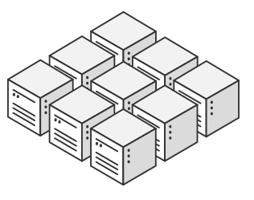
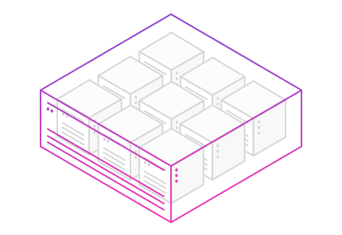
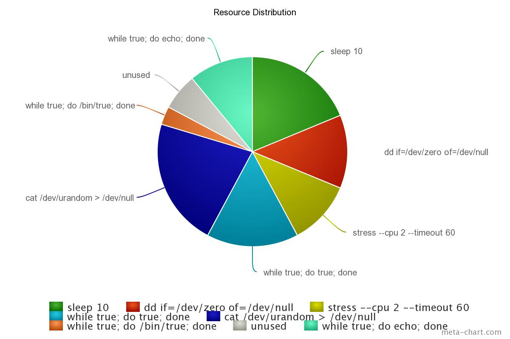
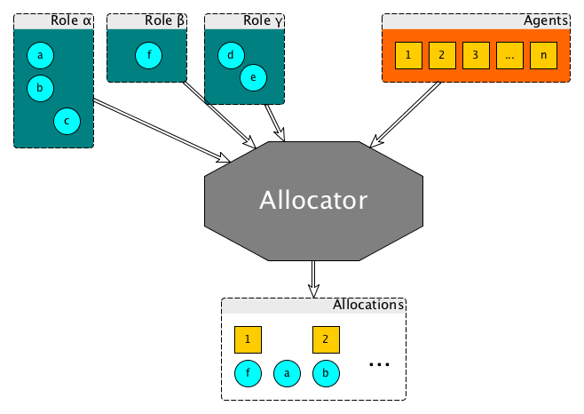

Scheduling & isolating
with Mesos and DRF
Alexander Rukletsov
alex@mesosphere.com
Apache Mesos is a distributed system for building and running other distributed systems
© lavka-podarkov.ru
Mesos lets us treat a cluster of nodes...
... as one big computer
|
Not as individual machines |
Not as VMs |
But as computational resources like cores, memory, disks, etc.
Ridiculous?
Mesos is...
| A top-level Apache project | |
| A cluster resource negotiator | |
| Scalable to 10,000s of nodes | |
| Supported and developed by Mesosphere, Twitter and other companies | |
| Fault-tolerant, battle-tested | |
| An SDK for distributed apps |
Mesos: Dichotomy
|
Plumbing |

Scheduling |
MesosPlumbingWhat?
© CERN
Custom executors
-
What happens if a task is using more resources than allocated?
- It "steals" resources from other tasks of the same executor
- The whole executor is limited (e.g. killed) if total usage exceeds the total allocation
-
What does a "kill task" request mean?
- It is up to executor how to react
-
What is actually a task description (
TaskInfo)?- It is up to executor how to treat it
- Dummy tasks to implicitly increase resource limits for running tasks
-
What is with IP per task?
- It is actually IP per container, IP per task is very tricky
Command executor (aka Mesos Executor)
-
How to send a message to a task?
- Impossible,
sendFrameworkMessage()is not implemented
- Impossible,
-
How to configure a custom clean-up action?
- Impossible; current behaviour is
SIGTERMfollowed bySIGKILL
- Impossible; current behaviour is
Tasks are virtual, containers are real
Delivery guarantees
- at-least-once vs. at-most-once
- TCP delivery receipt vs. processing the message
- What does HTTP API change?
Scheduling and Distributing Resources
(aka allocation)
DRF: Dominant Resource Fairness
Based on the research in Berkeley: NSDI '11 paper
But what is fair?
Allocation scenario 1
_pt1.png)
Allocation scenario 1
_pt2.png)
Allocation scenario 2
.png)
Allocation scenario 3
_pt1.png)
Allocation scenario 3
_pt2.png)
Allocation scenario 4
.png)
Future allocation scenarios
- Inverse offers
- Offers with revocable and non-revocable resources combined
Allocator mechanics
DRF: Sorting frameworks (and roles)
Entity $ e \leftarrow \{ frameworks \} \bigvee \{ roles \} $
Target: calculate $ e_{share} $
$ \forall \; \text{scalar resource} \; r: e_{share}(r) := \frac{e_{allocation}(r)}{\sum\limits_{\forall e}{r}} $
$ e_{share} := \max\limits_{r} \{e_{share}(r)\} $
Final ordering: $ \langle e_{share}, e_{allocations} \rangle $
Assumptions DRF makes
- Frameworks are good citizens
- Frameworks compete for resources
- Agents are of similar size
- Tasks will eventually end (for rebalancing)
- Clusters are big (more agents than frameworks)
- Only scalar resources contribute to fair share
Alternative allocation policies
- Dominant Cumulative Resource Share: 2σ's Cook framework and overview
- Resource guarantees and limits (quota): Apache Aurora framework
- Other existing alternatives?
Future improvements
- Persistent primitives & dynamic reservations: MesosCon Seattle 2015 talk by Jie Yu (Twitter) and Michael Park (Mesosphere)
- Oversubscription: turbocharge your cluster
- Quota (WIP): design & overview
- Optimistic offers, inverse offers (WIP)
- Preemption
- Revocable resources
- Cluster-wide resources: overview
- Multi-role frameworks: overview
- Time-based reservations